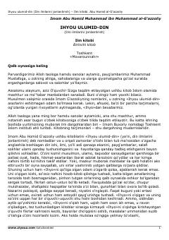

IUImom Gʻazzoliyning ilm fazilati va maʼnaviy poklanish haqidagi fundamental asari.
Ushbu asar Imom Gʻazzoliyning mashhur 'Ihyou ulumid-din' asarining birinchi qismi boʻlib, ilmning fazilati, oʻrganish odoblari va olimlarning vazifalari haqida bahs yuritadi. Kitob musulmon kishining qalbi va niyatini poklashga, diniy bilimlarni hayotga toʻgʻri tatbiq etishga chorlaydi.